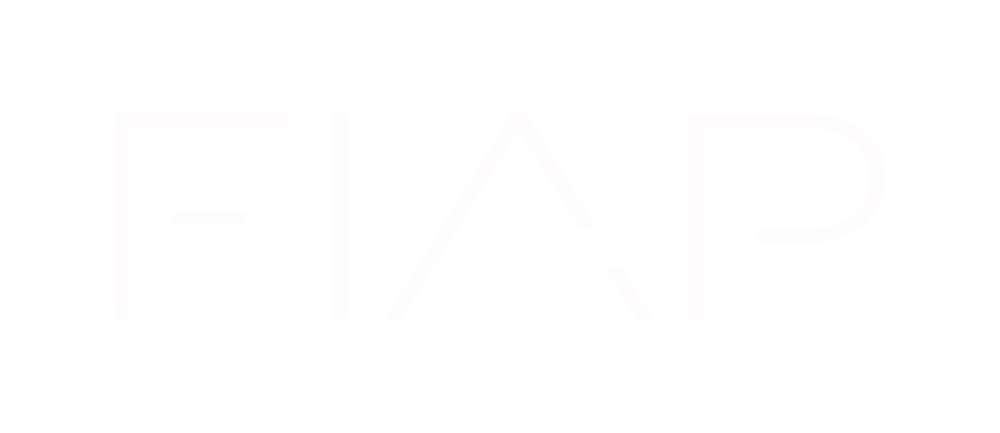

Assistente de Decupagem
Pré-edição e apoio pedagógico por IA
PAINEL v0.2.13Conexão local
O token fica somente nesta sessão do painel. Não o envie nem o adicione ao projeto.
Cortar aula
Selecione as fontes e gere a primeira sequência de cortes.
Com revisão por IA, o corte pode enviar áudio temporário e transcrição aos provedores configurados. Sem essa opção, o processamento permanece local.
Use somente se quiser análise textual mais rápida. Sem esta opção, o sistema sempre analisa o áudio completo.
Fila de tarefas
Abertura de videocast
Cria uma abertura de 30 a 40 segundos com 2 a 4 falas completas, conectadas por um tema e sem repetir takes.
A transcrição é local. A IA avalia os blocos do episódio e monta a abertura com contexto. A seleção envia texto aos provedores configurados; o Ollama é a alternativa local.
Indicar letterings
Textos de até 4 palavras, selecionados pelo contexto da aula. Siglas recebem indicação a cada menção.
Selecione um render completo da sequência final, desde o início e sem alterar os tempos. Você pode continuar editando outras sequências: os marcadores serão inseridos nesta sequência ao final. A análise usa a fala editada; slides e textos já na imagem precisam de conferência visual.
Indique a sequência revisada pelo humano para encontrar os pontos que precisam de texto.
Ensinar com esta edição
Depois de editar, deixe a sua sequência final aberta. Vamos comparar suas escolhas com a primeira sugestão da IA.
Este registro ensinará decisões de montagem didática. Não será usado para escolhas de câmera de videocast.
Primeiro selecione todos os XMLs originais da IA e cancele. Depois selecione um único XML exportado da sequência final. Nenhum vídeo ou áudio é copiado.
Mais opções
Auditar edição final
Depois da sua revisão, escolha o render final. A auditoria marca possíveis problemas de áudio, imagem, continuidade, repetição, conteúdo e jump cuts.
No perfil MBA, frames do render e trechos de transcrição podem ser enviados ao Gemini para sugerir zoom, respiro, destaque de slide ou plano estável. Nenhum efeito é aplicado automaticamente.
O XML desta sequência é exportado para leitura; você pode continuar editando outra enquanto a auditoria roda. Os marcadores voltarão para esta sequência, sem alterar mídia, corte ou efeito. Jump cuts sem mudança de escala aparecem em vermelho.
Aguardando...